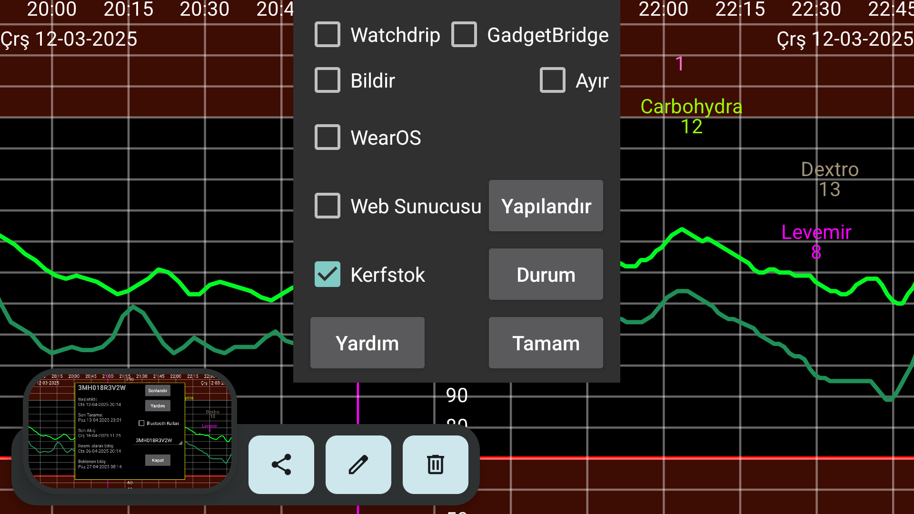

be de fr it nl pl pt ru tr uk zh en
Juggluco, saatinizde glikoz degerlerini almanin alti yolunu sunuyor.
Bildir açik oldugunda, her yeni glikoz degeri geldiginde bir Android bildirimi olusturulur. Bazi saatlerde bildirimler yalnizca yeni bir bildirim olusturuldugunda saate gönderilir, bunlar için Ayir'i açmaniz gerekir. Bu saatler için ayrica alarm bildirimleri almak için Ayir 'i açmaniz gerekir.
Bunu açarak, Juggluco glikoz degerlerini Watchdrip+'a gönderebilirsiniz. Watchdrip+, glikoz degerlerini gösteren saat yüzlerini MiBand/Amazfit saatlerine gönderir.
GadgetBridge MiBand/Amazfit saatlerinde hava durumu bilgilerini görüntülemeyi mümkün kilar. Gadgetbridge seçenegi açikken, Juggluco, hava durumu bilgisi oldugu bahanesiyle GadgetBridge'e glikoz degerlerini gönderecek. Bunun Watchdrip'e göre avantaji çok daha hizli olmasiydi, ancak daha az bilginin görüntülenmesi dezavantaji vardi. Juggluco, glikoz degerini ve bir yön okunu hava durumu konumuna koyar. Bu konum, saatte Hava Durumu altinda görüntülenir. Bu konumu görüntüleyen herhangi bir saat kadrani bulamadim. Yalnizca mmol/L için: noktadan önceki deger maksimum sicakliga ve noktadan sonraki deger minimum sicakliga konur. mg/dL degerleri sicakliklar için çok büyüktür, bu nedenle son rakam minimum sicakliga ve son rakamdan önceki sayilar maksimum sicakliga konur. Böylece 106 mg/dL su sekilde gösterilir: maksimum sicaklik 10, minimum sicaklik 6.
Degisimin yönü hava ikonunu belirler: kar, düsen glikoz. Yagmur, yükselen glikoz. Ayrica mevcut sicakliga da konur. Sifirdan büyükse yükselen glikoz, sifirdan düsükse düsen glikoz anlamina gelir.
Kerfstok, sayilar (insülin dozlari gibi) girebileceginiz bir saat uygulamasidir ancak ayni zamanda mevcut glikoz degerini de görüntüler. Yeni bir glikoz degeri gelir gelmez, Juggluco bunu Kerfstok'a gönderir. Bu nedenle Kerfstok her zaman en son glikoz degerini görüntüler. Kerfstok ayrica Garmin tarafindan desteklenen tüm aktiviteleri kaydedebilir ve hiz ve mesafeyi görüntüleyebilir. Watch->Kerfstok Status-> Help ve https://www.juggluco.nl/Kerfsto k adresine bakin
Uygulamalar, Juggluco tarafindan gönderilen glikoz yayinlarinin birinden glikoz degerlerini alabilir ve bu glikoz degerlerini bir saate gönderebilir. Örnegin G-Watch (TizenOS or WearOS) Glucodata Yayinindan glikoz degerlerini alabilirsiniz (bkz. Sol menü->Ayarlar->Veri Degisimi).
Juggluco bir xDrip/Nightscout web sunucusunu içerir. Bu, xDrip saat uygulamalarini dogrudan Juggluco ile kullanmayi mümkün kilar. xDrip yalnizca her 5 dakikada bir yeni bir glikoz degeri görüntülerken, Juggluco her dakika yeni bir glikoz degeri görüntüler. Juggluco ayrica xDrip saat uygulamalarina en son glikoz degerini gönderir. Glikoz degerleri yalnizca saat uygulamasi isterse saatlere gönderilir, bu nedenle görüntülenen degerlerin ne kadar eski oldugu saat uygulamasinin ne zaman istedigine baglidir. Örnegin, Garmin saatlerindeki saat yüzleri ve veri alanlari yalnizca her 5 dakikada bir glikoz degeri ister. xDrip araciligiyla bu genellikle 10 dakikalik glikoz degerlerine izin verir. Dogrudan Juggluco ile baglandiginda, bu saat yüzleri 6 dakikalik glikoz degerlerine kadar gösterir. Garmin altinda, Kerfstok'u kullanamiyorsaniz, son glikoz degerini düzenli olarak almak için su seçeneklere sahipsiniz. Bir xDrip widget'i (https://apps.garmin.com/tr-TR/apps/73115e04-dc9f-4765-ad88-e7ae 283ce995) bir aktivitenin kaydi sirasinda da kullanilabilir. Yani bir eliniz bossa, standart bir Garmin spor uygulamasiyla bir aktiviteyi kaydederken bu xDrip widget'ina geçebilirsiniz. Ayrica glikoz degerini düzenli olarak güncelleyen bir xDrip sport uygulamasi da var: https://apps.garmin.com/tr-TR/apps/aaf6533b-bca1-4365-9131-9f88 2f6f148c. Hemen baslatmayi deneyebilirsiniz, böylece kullanilabilir olduktan sonra bir glikoz degeri talep edecektir. Veri alanlari ve saat yüzleri ideal çözüm olacaktir, ancak Garmin tarafindan uygulanan kisitlamalar bunlari çok az degerli hale getiriyor.
Daha önce Juggluco'daki web sunucusunu bir saat yüzüyle kullanabiliyordunuz Fitbit için : https://glancewatchface.com . 2024'ün yarisindan itibaren üçüncü taraf uygulamalarina artik Fitbit saatlerinde izin verilmiyor: https://www.tech radar.com/health-fitness/fitbit-watches-in-the-eu-will-lose-third-party -apps-and-watch-faces-heres-why . AB düzenlemesi bu karari tetiklemis olmali. Belki de Wear OS'de alternatif uygulama magazalarina izin vermenin olasi gerekliligi: Üçüncü taraf uygulamalari olmayan basit fitness takipçilerine de izin veriliyor ve biz de buna dönüsebiliriz. Bazilari, VPN kullanarak konumlarini ABD'ye degistirdikten sonra, üçüncü taraf uygulamalari tekrar yükleyebileceklerini iddia ediyor.
Web sunucusu arayüzü hakkinda daha fazla bilgi için bkz. https://www.jugg luco.nl/Juggluco/webserver.html
Juggluco'nun Wear OS'a tasinmis bir versiyonu var. Görüntü daha küçük ekrana uyarlanmis ve bir saat yüzü eklenmis. Saat yüzü normal bir Wear OS saat yüzü olarak takilabilir ve saatin yaninda Bluetooth üzerinden alinan mevcut glikoz degerini de gösterir.